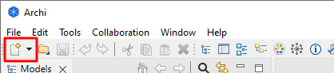
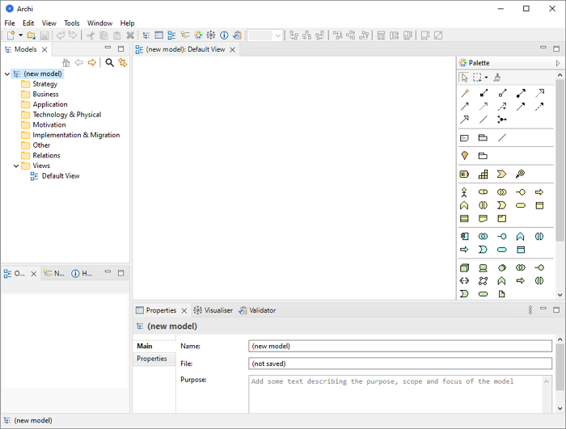

To create a new, blank ArchiMate model in Archi do the following:
选 择Empty Model" from the main "新文件" menu or from the button on the main toolbar:

The "New" button
将创建一个名为“（新模型）”的模型，并在 模型 使用空白绘图画布和调色板打开“默认视图”的树窗口：

The default Archi workspace with a new model created
Note that the model is named by default "(new model)". You may change this by renaming it directly in the Model Tree or selecting it in the Model Tree and editing the name in the _基本概念必须具备操作型定义李白就象一个浪子. You may also add a "Purpose" here in the Properties Window describing the purpose and aims of the model.
另请注意，已自动为模型创建了一个“视图” ，并命名为“Default View"并放置在模型树中的“视图”文件夹中。如果“视图”未打开（即使用空白绘图画布和调色板可见） ，您可以在模型树中双击它来打开它。这样做将打开右侧的视图（图）编辑器。 If you wish to rename the View, simply select it on the Model Tree and edit the name in the Properties Window.
这 模型 window can display more than one Model Tree which means that you can work on more than one model at the same time.
进行更改时，树中模型上出现的星号表示此模型已更改，但尚未保存更改。